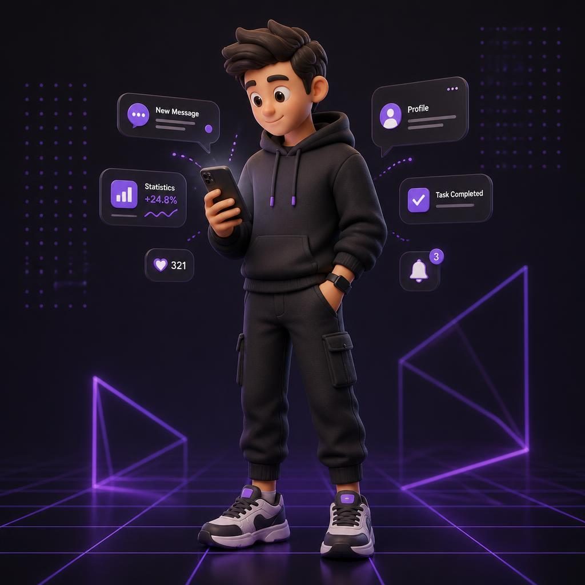

Как квалифицировать нецелевые заявки, правильно их фиксировать и защищать свою конверсию.

В таблицу заносим только те лиды, по которым вы уже позвонили и взяли в работу, но в ходе разговора выяснили, что это не наш целевой клиент. Такие лиды исключаются из вашей конверсии.
https://forms.gle/pdULwS9AJtMz5VNC6Бабушка, дедушка или другой родственник, который не является законным представителем ребёнка и не готов подключать родителей.
Взрослых рядом нет, телефон родителя не даёт.
Агрессия, оскорбления, явное троллирование или откровенно неадекватные ответы.
Заведомо несерьёзные данные, явный спам, тестовые заявки, дубликаты от других сотрудников.
«Это вообще не про детей», «У меня нет детей», «Мне просто было интересно» — и нет возможности или смысла выйти на целевой диалог с родителем.
Ссылка на лид из CRM — вставляете прямую ссылку на карточку лида.
Краткое пояснение — 1–2 предложения о причине.
Все строки, занесённые в список и проверенные руководителем, не учитываются в вашей конверсии по взятию в работу, квалификации, записи и т.д.
Чтобы лид был исключён из конверсии, он обязательно должен быть:
Так мы защищаем конверсию сотрудников от мусорных лидов и одновременно фиксируем, куда уходит нецелевой трафик.